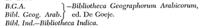
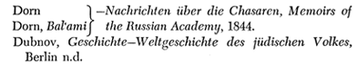
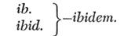
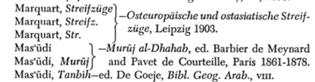
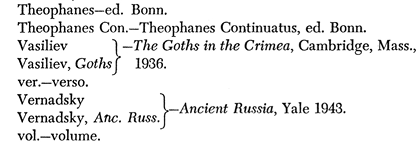
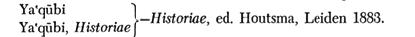
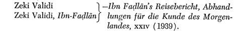

KAYNAKÇA
a.—anno.
Abu-al-Fidâ’—Geography, ed. Reinaud and De Slaoe, Paris 1840.
Abu-Hâmid al-Andalusi—Tuhfat al-Albdb, ed. Ferrand, Journal
Asiatique, tome 207 (1925).
Ad fin.—ad finem, at the end.
a.h.—Anno Hegirae.
Ad init.—ad initium, at the beginning.
A.K.M.—Abhandlungen für die Kunde des Morgenlandes.
a.m.—Anno Mundi.
Arne—La Suede et l’Orient, Arehives d’Eiudes Orientales, Upsala 1914.
art.—article.
Assemani—Bibliotheca Orientalis, Rome 1719-1728.
B-Band.
Baladhuri—Futüh al-Bulddn, ed. De Goeje, Leiden 1866.
Bal’ami—Chronicle, ed. Dorn, Nachrichten über die Ghazaren, Memoirs of the Russian Academy, 1844.
Bar Hebraeus—Syriac Chronicle, ed. and translated Sir E. A. Wallis Budge as Chronography, Oxford 1932.
Barthold—Decouverte de l’Asie, French transl. by B. Nikitine (Paris 1947) of Barthold’s Istoriya Izucheniya Vostoka, 1925.
Bashmakov—”Une solution nouvelle du probleme des Khazares,” Mercure de France, July 1931.
Baumstark—Geschichte der syrischen Literatür, Bonn 1922.

B.R.A.—Bulletin of the Russian Academy.
Bretschneider, Researches—Mediaeval Researches from East Asiatic Sources, 1910.
Brock elmamı—Geschichte der arabischen Litteratur, VVeimar 1898-1902, Leiden 1937, ete.
Browne—Literary History of Persia, London and Cambridge 1902-1930.
B.S.O.A.S.—Bulletin of the School of Oriental and African Studies, London.
Bury, L.R.E.—J. B. Bury, A History of the Later Roman Empire from Arcadius to İrene, London 1889.
Bury, E.R.E.—J. B. Bury, A History of the Eastern Roman Empire from the Fail of irene to the Accession of Basil I, London 1912.
Bury, Gibbon—Gihbon’s Decline and Fail of the Roman Empire, edited by J. B. Bury.
Bury, Theodosius—History of the Later Roman Empire from the Death of Theodosius I to the Death of Justinian, London 1923.
Buxtorf—Cosri (Kuzari), ed. Buxtorf, Basle 1660. e.—chapter, or cırca.
Carmoly—Des Khozars, in Itineraires de la Tene Sainte, Brus-sels 1847.
Carra de Vaux—Le livre de Vavertissement et de la revision, Paris 1896.
Chabot—Chronique de Michel le Grand, ed. and transl. J. B.
Chabot, Paris 1899, ete. Chadvvick, Beginnings—Mrs. N. K.
Chadwick, Beginnings of Russian History, Cambridge 1946.
Chavannes, Documents—E. Chavannes, Documents sur les T’ou-Kiue occidentaux, St. Petersburg 1903.
Chronicle—Russian Chronicle, transl. Leger, Publications de TEcole des Langues Orientales, II sene, xiii (1884). col.—column.
Constantine Por.—Constantine Porphyrogenitus.
Darband Nömah—Knscm Beg’s edition in Memoirs of the Russian Academy, Divers Savants, 1851.
Decouverte—see Barthold.

ed.—edited by, edition of.
ed. Bonn—Corpus Scriptorum Historiae Byzantinae, Bonn. edd.—editors.
E.I.—Encyclopaedia of islam.
Ene. Jud.—Encyclopaedia Judaica.
Eranshahr—see Marquart, Eranshahr.
E.R.E.-see Bury, E.R.E.
Ferrand—see abu Hâmid al-Andalusi.
flor.—florvint
fol.—folio.
Fragmente—Westberg, Die Fragmenie des Toparca Goticus, Memoirs of the Russian Academy, 1902.
Frâhn, Khazars—Veteres Memoriae Chasarorum, Memoirs of the Russian Academy, 1822.
G.A.L.—see Brockelmann.
Gardîzi—ed. Barthold in Memoirs of the Russian Academy, 1897.
Gibb, Arab Conquests—ll. A. R. Gibb, The Arab Conquests in Central Asia, Royal Asiatic Society, 1923.
G.M.S.—Gibb Memorial Series.
Gregoire—H. Gregoire, “Le nom et Toriğine des Flongrois,” Z.D.M.G., B.91 (1937).
Grâtz—Geschichte der Juden, ed. 3.
Harkavy, Denkmaler—Altjüdische Denkmaler aus der Krim, Memoirs of the Russian Academy, 1876.
Historische Glossen—see Marquart, Historische Glossen.
Hudüd—see Minorsky, Hudud.

Ibn-A’tham al-Küfi—Kitâb al-Futûh, Seray ms. 2956, cited by Zeki Validi, lbn-Fadlân, etc.
Ibn-al-Athîr—ed. Cairo, a.h. 1303.
lbn-Fadlân—ibn-Fadlân’s Rihlah, ed. Zeki Validi, whom see. § means section of this text.
Ibn-al-Faqîh—ed. De Goeje, Bibi. Geog. Arab., v.
Ibn-Hajar, Işâbah—al-Işâbah fi Tanıyız al-Şahâbah, Bibi. Ind., 1856-1873.
Ibn-Hawqal—1 ed. De Goeje, Bibi. Geog. Arab., n; 2 ed. Kramers, 1939.
Ibn-Isfandiyâr—History of Tabaristân, transl. E. G. Browne, Gibb Memorial Series.
Ibn-Khaldün-ed. Bûlâq, a.h. 1284.
Ibn-Khurdâdhbih—ed. De Goeje, Bibi. Geog. Arab., vı.
Ibn-Qutaybah, Ma’ârif—Kitâb al-Ma’ârif ed. “VVüstenfeld, Göttingen 1850.
Ibn-Rustah—ed. De Goeje, Bibi. Geog. Arab., va.
lbn-Sa’d-Tabaqât, ed. E. Sachau, Leiden 1904-1917. id.—idem.
Iştakhri—ed. De Goeje, Bibi. Geog. Arab., i.
J.A.—Journal Asiatique.
J.A.O.S. —Journal of the American Oriental Society.
J.E.—Jeıvish Encyclopedia.
J.Ç.R.—Jeıvish Ç-uarterly Review.
J.R.A.S.—Journal of the Royal Asiatic Society.
Juwayni—Ta’rifc/ı-i Jihân-gushây, ed. Mirza Muhammad in Gibb Memorial Series.
K—Professor Paul Kahle’s collation of the Chester Beatty ms. of Iştakhri.
Kasem Beg—Darband Namah (ed.), Memoirs of the Russian Academy, 1851.
Kmosko, “Araber”—”Araber und Chasaren,” Körösi Csoma-Archivum, 1924-1925.
Kmosko, “Quellen”—”Die Quellen Istachri’s in seinem Berichte über die Chasaren,” Körösi Csoma-Archivum, 1921.
Kokovtsov—Evreisko-khazarskaya perepiska v X veke, Leningrad 1932.
Kutschera—Die Chasaren, ed. 2, Vierma 1910. l.—lege.
Landau, Beitrage—Beitrage zum Chazarenproblem, Breslau 1938.
Landau, “Present Position”—”The present position of the Khazar problem,” Zion, 1942—in IIebrew.
Lat.—Latin. Leger—see Chronicle.
L.V.—Long Version of the Reply of Joseph.
Mann, Texts and Studies—Texts and Studies in Jevoish History and Literatüre, Vol. i, Cincinnati 1931; Vol. n, Philadelphia 1935.
Marquart, Eranshahr—Erânsahr nach der Geographie des Ps. Moses Xorenac’i, Abhandlungen der königlichen Gesellschaft der Wissenschaften zu Göttingen, Neue Folge, in, 2, Berlin 1901.
Marquart, Historische Glossen—”Historische Glossen zu den alttürkischen Inschriften,” Vienna Oriental Journal Zeitschrift für die Kunde des Morgenlandes), xa, 1898.

Minorsky, Hudüd—Hudud al-Alam, Gibb Memorial Series.
Minorsky, Marvazi—Sharaf al-Zamân T âhir Marvazi on China, the Turks and India, Royal Asiatic Society, 1942.
Minorsky, “Tamîm”—”Tamim ibn-Bahr’s Journey to the Uyghurs,” Bulletin of the School of Oriental and African Studies, 1948, xn/2, 275-305.
Mon. Germ. Scr.—Monumenta Germaniae Historica: Scriptores.
M.R.A—Memoirs of the Russian Academy.
MS.— manuscript.
MSS.—manuscripts.
M.T.—Massoretic Text.
Muqaddasi—ed. De Goeje, Bibi. Geog. Arab., m.
n.—note.
n.d.—no date.
Neubauer-”VVhere are the Ten Tribes?” Jeıvish Çuarterly Revieto, i (1889).
Nicephorus—ed. Bonn.
Nöldeke, Beitrage—Beitrage zur Geschichte des Alexander romans, Denkschriften der Wien. Akad., xxxvm, 5.
ob.—obiit.
Pelliot, Noms turcs-Faul Pelliot, “Quelques noms turcs d’hommes et de peuples finissant en ar,’” Oeuvres posthumes de Paul Pelliot, n, Paris 1950.
Platonov, Russie Chretienne-S. F. Platonov, La Russie Chre- tienne in Avaignac, Histoire du Monde, t. vii (Paris 1931).
Poliak, “Conversion”—”The Khazar Conversion to Judaism,” Zion 1941—in Hebrew.
Poliak, Khazaria-Khazaria, Tel Aviv 1944-in Hebrew.
Qâmüs-al-Çâmüs al-Muhît of al-Firüzâbâdi, 4 vols., Cairo 1353/1935.
Qazwmi—Cosmography, 2 vols., ed. VVüstenfeld, Göttingen 1848.
Qudâmah-ed. De Goeje, Bibi. Geog. Arab., vı.
Rashîd al-Dîn—ed. Blochet, Gibb Memorial Series.
R.E.J.—Revue des Etudes Juives.
Schultze—Das Martyrium des heiligen Abo von Tiflis, Texte und Untersuchungen zur Geschichte der altchristlichen Literatür, Neue Folge, xiii (1905).
s.—sub.
ser.—series.
Straek—Firkovitch und seine Entdeckungen, Leipzig 1876.
Streifzüge, Streifz.—see Marquart, Streifzüge.
S.V.—Short Version of the Reply of Joseph.
s.v.—sub voce
t.—tome.
Tabari—ed. De Goeje and others, Leiden, 1879-1901. Tafdil-Kitüb Tafdil al-Atrâk, ed. ‘Azzâwi, reproduced by Ş. Yaltkaya, Belleten, No. 14-15, istanbul 1940.

Westberg, Beitrage—Stadt und Volk Saksin, Beitrage zur Klarung orientaliseher Çuellen über Osteuropa, Bulletin of the Russian Academy, 1899.
Westberg, ibrahim ibn-Ya’qüb—Ibrâhîm’s-ibn-Ja’kûb’s Reisebericht über die Slawenlande atış dem Jalıre 965, Memoirs of the Russian Academy, 1898.
Westberg, Gothic Toparch—see Fragmente.
W.Z.K.M.—Wiener Zeitschrift für die Kunde des Morgenlandes.

Ya’qûbi, Buldan—ed. De Goeje, Bibi. Geog. Arab., vn.
Yâqüt, Buldan—Mu’jam al-Buldân, ed. Wüstenfeld, Leipzig 1866-1870.
Zajaczkowski, “Culture”—”O kulturze chazarskiej i jej spadkobiercach” (The Khazar Culture and its Heirs), Mysl Karaimska, Breslau 1946.
Zajaczkowski, “Problem”—”Problem jezykowy Chazar6w” (The Problem of the Language of the Khazars), Proceedings of the Breslau Society of Sciences, 1946.
Zajaczkowski, Studies—Ze studioıo nad zagadnieniem chazar skim (Studies on the Khazar Problem), Polish Academy, Cracow 1947.
Zambaur— Manuel de Genealogie et de Chronologie, Hanover 1927.
Z.D.M.G.—Zeitschrift der Deutschen Morgenlandischen Gesell-schaft.

Zeki Validi, “Völkerschaften”—”Völkerschaften des Chazarenreiches im neunten Jahrhundert,” Körösi Csoma-Archivum, 1940.
Zeki Validi, “Die Schvverter der Germanen”-in Z.D.M.G., B. 90 (1936), 19-37.
Zeuss, Die Deutschen—Die Deutschen und die Nachbarstamme, Munich 1837.
Zh.M.N.P.-see Z.M.N.P.
Zichy—”Le voyage de Sallâm l’interprete,” Körösi Csoma-Archivum, 1921.
Z.M.N.P.—Zhurnal Ministerstva Narodnogo Prosveschenia.
Zotenberg—Chronigue de Tabari, Paris 1867-1874.